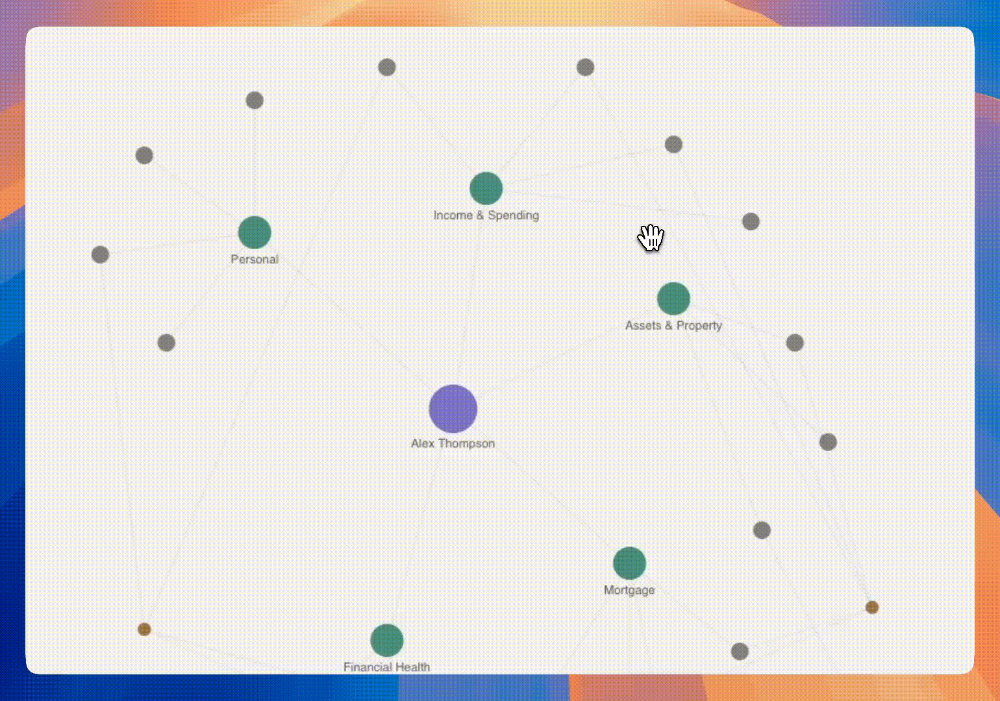
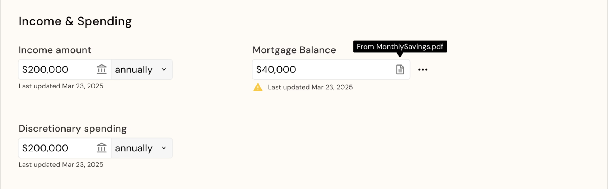
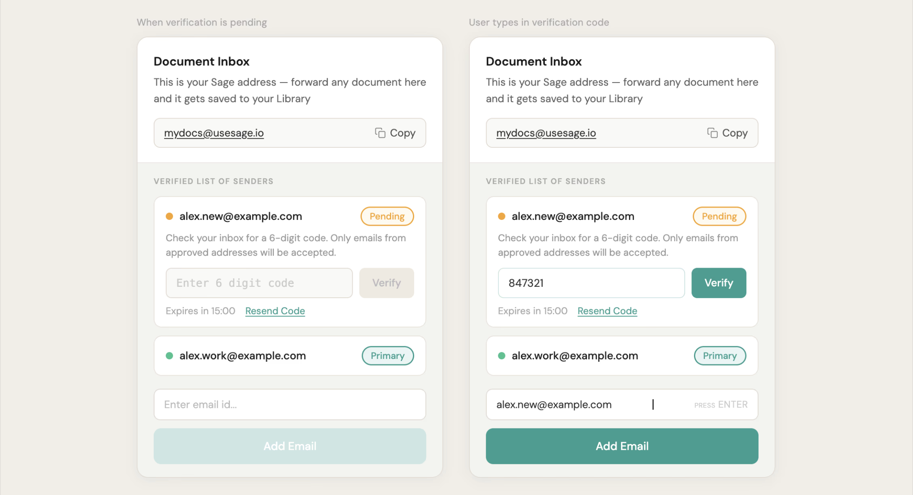
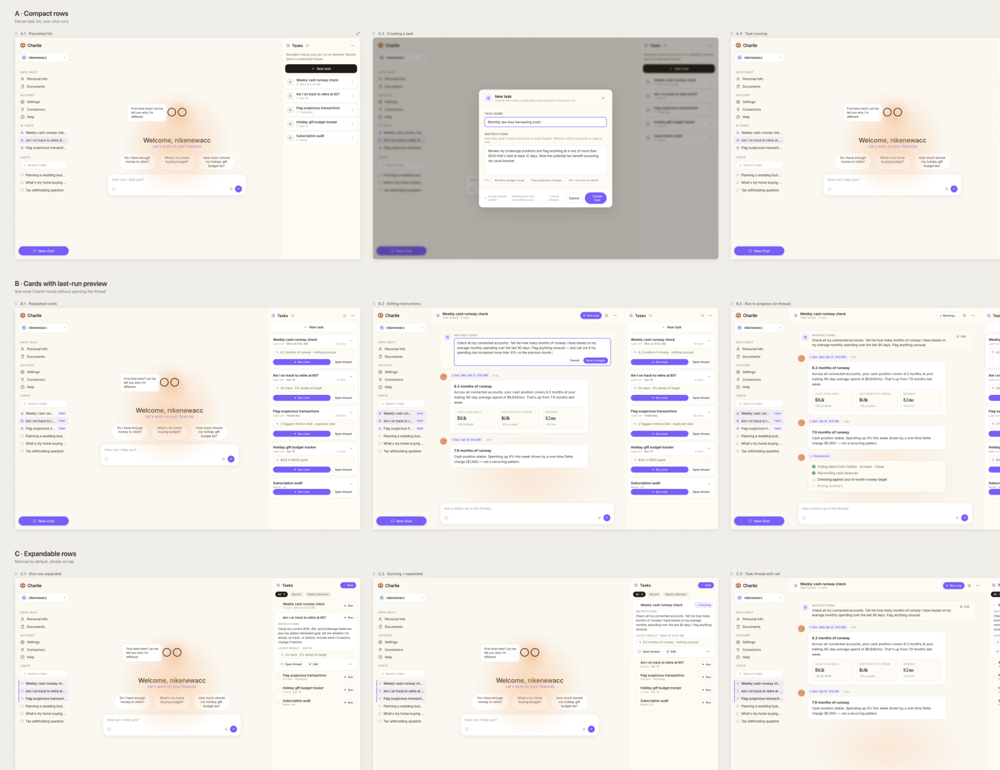
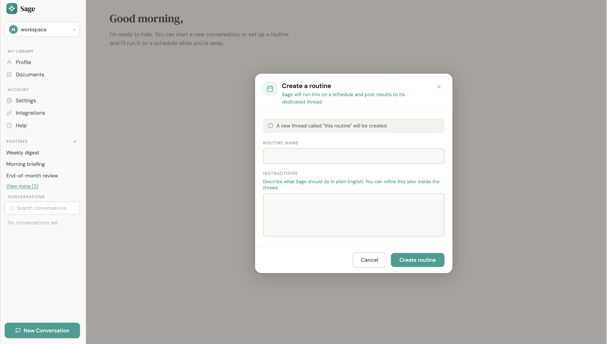

Charlie — Case Study
Designing Trust Into a Conversational AI
A privacy layer between the user and the model, built to feel invisible, not enforced.
RoleDesign Engineer
TimelineMar 2026 – June 2026
WithEngineers, PM, Growth Officer
NDA Alert — mockups in this case study are illustrative, reimagined to protect sensitive product details while preserving the design approach, decisions, and outcomes that shaped the work.
01Context
A Privacy Layer, Not a Chat Feature
Charlie sits between user and model, masking identity before any query leaves the product.
Charlie is an AI-powered personal assistant that masks identifying data before a query leaves the product, so the model gets useful context without knowing who the user is. The first wedge was personal finance, where trust breaks quickly if security feels confusing or heavy.
I led user research, feature design, and rapid AI-assisted prototyping across onboarding, data masking, source ingestion, and recurring assistant tasks.

Fig: The gap between buyer requirements and end-user trust
02Problem
Make Privacy Feel Invisible
Every security step is a moment where trust either grows — or quietly breaks.
Users want deeply personalized financial answers, but the product has to handle sensitive data to get there. Every security step is a moment where confidence can grow, or trust can break.
The design challenge was making that infrastructure legible without making it feel like surveillance. Users needed clarity, control, and momentum inside the same flow.

Fig: Onboarding designed to build trust before asking for deeper context

Fig: Charlie disguising user data before sending it to an LLM
03Discovery
Not Waiting for a Brief
Proactive research surfaced four strategy questions leadership could use to shape the roadmap.
I ran proactive unmoderated sessions to pressure-test early interaction patterns and understand where security friction made users hesitate. The work quickly moved beyond screens into product strategy: who is this actually for, and what does each audience need to trust?
In a B2B2C model, the enterprise buyer and the end user are different people. I translated session observations into four strategy questions that leadership could use to shape the roadmap.
The team's early focus was B2B sales — reasonable, but it risked treating end-user trust as secondary. I flagged that if the product didn't hold up for real users, it would eventually undermine the enterprise pitch itself. The team agreed, and I took the initiative to lead the UX work directly. As part of that, I restructured interviews to capture which financial institution each participant's data already ran through, so a positive session could be tied back to a specific bank relationship. I pitched using that as an enterprise sales tactic: pair outreach to a bank with evidence that its own customers had already used and liked the product. Leadership adopted it.

Fig: Observations turned into strategic product questions
04Design & Architecture
Features That Answered Real Questions
I moved fast by treating AI as a design-to-code partner - going from feature brief to functional prototype in 1-2 days. My focus was 4 modular pillars, each designed so privacy operates as invisible infrastructure:
1. Visualizing the Knowledge Graph: Translating a growing network of connected financial sources into an interface users can understand, manage, and audit at a glance.

Fig: Interactive knowledge graph - Illustrative only; original data and structure withheld under NDA

Fig: Different information sourced from user's: documents, chatting with Charlie, bank acc.
2. Frictionless Ingestion via Email Sync: A secure email-forwarding verification pipeline - frictionless enough that connecting a new source feels like a natural step, not a security checkpoint.

Fig: A way to connect through emails seamlessly
3. Local-First Voice Architecture: Protected sensitive user input while preserving the speed and naturalness of voice interaction.

Fig: Exploring the voice interaction concept
4. Autonomous Task Execution: A structured task-scheduling modal that lets users set up persistent financial check-ins in plain English - no configuration overhead.

Fig: Tasks to run on recurrence
05Testing
One Thread, Four Sessions
Moderated testing on the Data Package Review step shaped the v2 direction for consent and trust.
I ran moderated evaluation sessions across mobile and desktop, focused on the Data Package Review component: the moment where users decide what context to share before a query goes out.
The sessions surfaced friction around masking and review, which directly informed the v2 direction for clearer consent, better defaults, and less cognitive load at the point of sharing.

Fig: Brief insights from testing
06Impact
Built to Scale Trust
Research and prototypes shaped the roadmap, the testing strategy, and the story told to institutional stakeholders.
The research, prototypes, and interaction framework did not just produce screens. They fed into the product roadmap, the formal testing strategy, and the enterprise narrative presented to institutional stakeholders.
My contract wrapped in June 2026. By then, the bank-tagged interview method was already in use for enterprise conversations — a piece of the go-to-market approach that outlasted the placement itself.